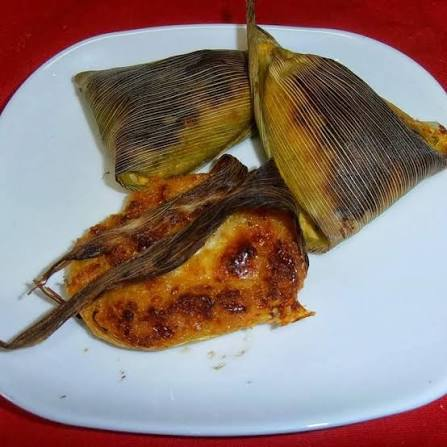
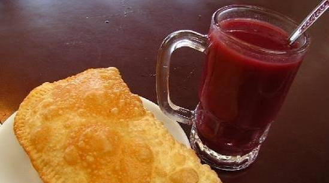
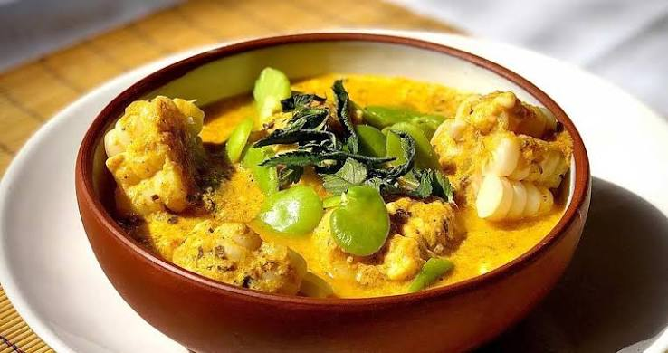

🏔️
Una tierra de valles y cerros colorados
Tupiza se encuentra en una zona de transición entre ambientes de valle y altiplano. Su paisaje está marcado por el río Tupiza y las formaciones rojizas que rodean la ciudad.
🇧🇴 TIERRA CHICHEÑA • POTOSÍ • BOLIVIA
Sabores con historia, tradición y tierra del sur boliviano
Tupiza, conocida como la “Joya Bella de Bolivia”, se encuentra al sur del departamento de Potosí y es capital de la provincia Sud Chichas. Rodeada de valles, ríos y los característicos cerros colorados, posee una cultura marcada por la historia chicheña, la agricultura, el comercio y la actividad minera.
Su gastronomía refleja esa diversidad. En sus preparaciones se encuentran productos andinos como la papa, el chuño, el maíz, la papalisa y las habas, combinados con carnes, lácteos, especias y técnicas que muestran el encuentro entre tradiciones indígenas y la cocina mestiza.
Descubre en el mapa la ciudad de Tupiza, ubicada en el departamento de Potosí, al sur de Bolivia.
📍 VER UBICACIÓN EN MAPASTupiza se encuentra en una zona de transición entre ambientes de valle y altiplano. Su paisaje está marcado por el río Tupiza y las formaciones rojizas que rodean la ciudad.
El maíz, las papas, el chuño, las habas, la papalisa y diferentes carnes forman parte de la tradición alimentaria andina y de los valles bolivianos.
Muchas preparaciones tradicionales son sustanciosas y calientes, ideales para acompañar las actividades cotidianas y las condiciones climáticas de la región.
La cocina regional reúne productos y conocimientos de tradición andina con ingredientes y técnicas incorporadas durante el periodo colonial, formando una gastronomía mestiza.
Explora cada preparación y conoce su historia, ingredientes, forma de preparación, momentos de consumo y curiosidades.

Sopa andina sustanciosa preparada con productos como chuño, papa, carnes, verduras y hierbas. Es una preparación de tradición andina y mestiza.
VER HISTORIA Y RECETA →
Preparación basada en la papalisa, un tubérculo andino conocido también como ulluco. Puede prepararse con un ahogado de ají y carne.
VER HISTORIA Y RECETA →
La gelatina de pata esun postre tradicional y artesanal de Sudamerica elaborada a partir de la cocción prolongada de patas de res
VER HISTORIA Y RECETA →
Preparación tradicional de carne de cordero acompañada de papa, arroz y ají, relacionada con la cocina andina boliviana.
VER HISTORIA Y RECETA →
Sopa tradicional de Potosí preparada con harina de maíz y piedra caliente, característica por servirse muy caliente y conservar técnicas ancestrales.
VER HISTORIA Y RECETA →
Empanadas horneadas, relacionadas con la tradición de panadería y cocina mestiza de los valles, especialmente sabrosas cuando se preparan en horno de leña.
VER HISTORIA Y RECETA →
Preparación hecha principalmente con choclo, queso y otros ingredientes. Las humintas tienen presencia tradicional en los valles de Tupiza, Tarija y Chuquisaca.
VER HISTORIA Y RECETA →
Bebida caliente de maíz, generalmente morado o amarillo, acompañada de buñuelos. Es una combinación popular para desayunos y meriendas en Bolivia.
VER HISTORIA Y RECETA →
Preparación de tradición altiplánica elaborada con queso fresco, habas, choclo, papa y una salsa cremosa con ají.
VER HISTORIA Y RECETA →Bebida tradicional elaborada a partir del maíz, profundamente relacionada con las culturas andinas.
CONOCER MÁS →Refresco preparado con durazno deshidratado, agua y especias. Es una bebida muy conocida en diferentes regiones de Bolivia.
CONOCER MÁS →Bebida mencionada dentro de la selección gastronómica regional investigada para este proyecto.
CONOCER MÁS →Refresco preparado con la pulpa del tumbo, aprovechando una fruta característica de las regiones de valle.
CONOCER MÁS →La bandera de Tupiza está formada por dos franjas horizontales: una azul y otra roja. El azul se relaciona con el cielo de Tupiza, mientras que el rojo representa las características montañas coloradas que rodean la ciudad y la identidad chicheña.
Estos colores inspiran la identidad visual de esta página y aparecen combinados con tonos crema, blanco y dorado para representar la artesanía, los tejidos y la riqueza cultural de la región.
Inspiración visual: tejidos, ponchos y artesanía chicheña.
Esta página busca valorar la gastronomía de Tupiza y su relación con la historia, la cultura y la identidad de nuestra región.
Cada plato representa algo más que comida: representa conocimientos transmitidos entre generaciones, productos de la tierra y momentos compartidos entre familias y comunidades.